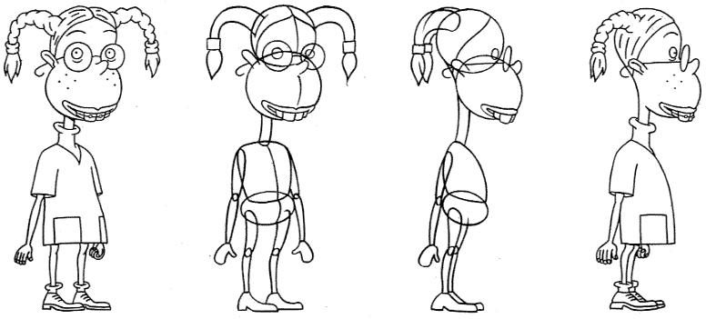
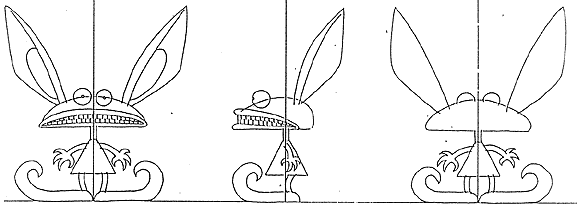
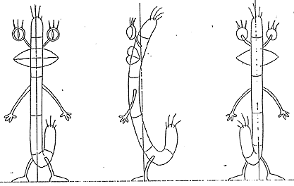
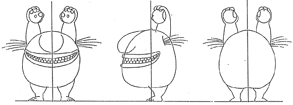

PART ONE:
CREATING CHARACTERS OUT OF BASIC SHAPES

Cartoon characters seem so real sometimes that it's easy to forget that all they are are a bunch of shapes put together in a particular way to form a figure.
Eliza, for example, has two circles for her head, two for her body, and long ovals for her arms, legs and neck.

In drawing a character, guidelines are a good way of determining height as well as positioning of each of the basic shapes that make up the form.

Feel free to use as many guidelines as possible in your drawings. Remember: you can always erase them later!

Once you get a bit of practice determining how to break down characters into basic shapes, you will be able to draw almost anything this way!